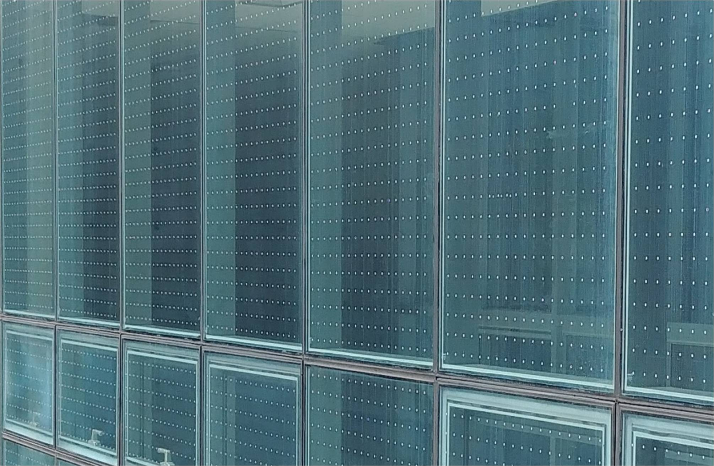

매해 수천 마리의 새들이 방음벽이나 유리창에 부딪혀 죽음을 맞습니다.
여기를 눌러 기록을 확인하세요
새들은 투명한 유리를 보지 못해서, 혹은 유리창에 비친 하늘을 진짜라고 착각해서, 투명한 방음벽과 유리 건물을 향해 날아듭니다. 허공을 날다가 고층 건물에 충돌하기도 하고, 산 속에 지어진 건물이나 나무로 둘러싸인 방음벽에 부딪치기도 합니다. 빠른 속도로 날아온 그들은 충돌과 동시에 목이 꺾이거나 뇌진탕으로 자주 사망에 이릅니다. 이러한 죽음을 '조류 충돌(window collision)'이라고 부릅니다.

조류 충돌을 줄이기 위해서 등장한 것이 바로 '버드 세이버(bird saver)', 충돌 방지 필름입니다. 유리창을 보지 못해 충돌하는 새들이 유리창을 인지할 수 있도록 만들어진 스티커와 필름 등이 예시입니다.
간혹 유리창에 설치되어 있는 맹금류 스티커는 큰 효과가 없습니다. 새들이 그것을 단순 장애물로만 인지해 아주 조금 경로를 바꿀 뿐입니다. 맹금류 스티커 말고, 도트 형태의 필름 등 설치하면 반영구적으로 유지할 수 있는 충돌 방지 필름이 시중에 여럿 있습니다. 설치하는 방법 또한 어렵지 않습니다. 작은 관심과 작은 노력으로 생명을 살릴 수 있습니다.

더 많은 유리창 충돌 저감 방안 보기